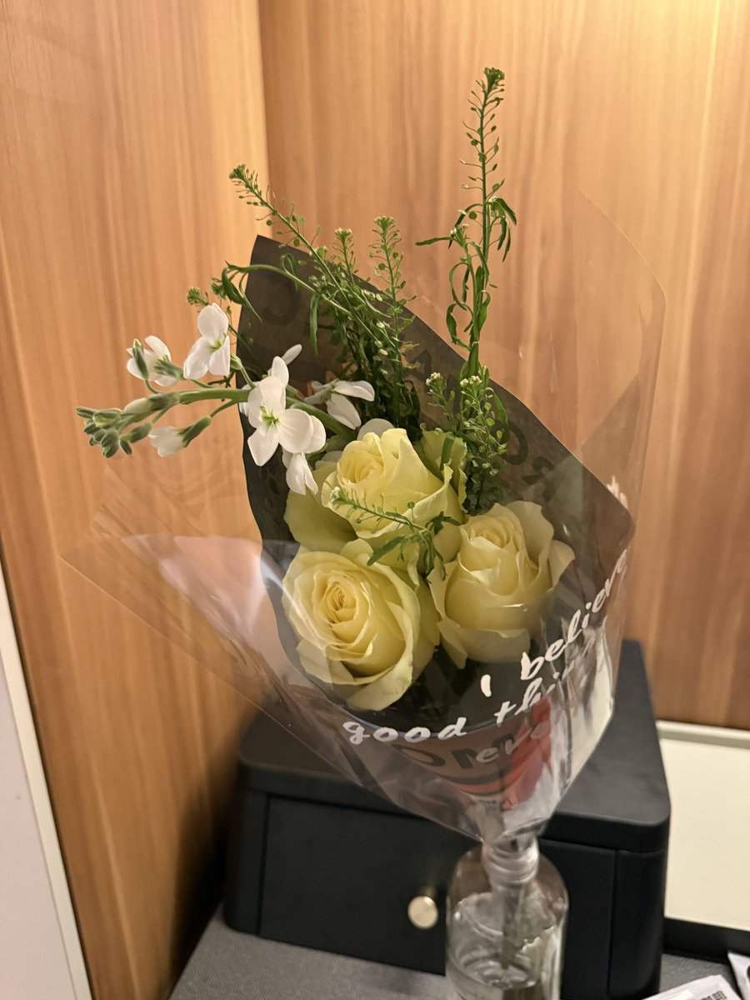

女朋友送的礼物，我本来还以为是什么呢，结果一看，发现是一个花，好像叫什么花。
女朋友在2025年12月25日给我送了花这件事没必要天天提，因为我知道2025年12月25日女朋友给买了花的人多的是。
其实我一直觉得女朋友送花是一件很普通的事情不理解为什么有人会刻意发出来炫耀，我觉得这没什么值得说的，这只是我生活中的一个小插曲，我也没有很高兴，毕竟我说了这是我的日常而已没有什么值得炫耀的，只是想跟大家说明一下，这里面我真没花一分钱，完全是我女朋友给我买的。我说这话不是为了炫耀什么，只是想特别强调一下这是我女朋友买的，真的不是为了显摆，毕竟是我女朋友送的，又不是我在炫耀。我女朋友买的就是香，我个人觉得这没什么可炫耀的，只是想让大家知道一下，这是我女朋友买的，仅此而已，真的没有任何炫耀的意思。
只是单纯想告诉大家，这真的是我女朋友买的
女朋友在2025年12月25日给我送了花这件事没必要天天提，因为我知道2025年12月25日女朋友给买了花的人多的是。
其实我一直觉得女朋友送花是一件很普通的事情不理解为什么有人会刻意发出来炫耀，我觉得这没什么值得说的，这只是我生活中的一个小插曲，我也没有很高兴，毕竟我说了这是我的日常而已没有什么值得炫耀的，只是想跟大家说明一下，这里面我真没花一分钱，完全是我女朋友给我买的。我说这话不是为了炫耀什么，只是想特别强调一下这是我女朋友买的，真的不是为了显摆，毕竟是我女朋友送的，又不是我在炫耀。我女朋友买的就是香，我个人觉得这没什么可炫耀的，只是想让大家知道一下，这是我女朋友买的，仅此而已，真的没有任何炫耀的意思。
只是单纯想告诉大家，这真的是我女朋友买的
